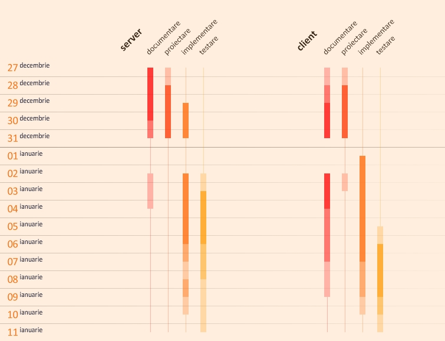

În realizarea proiectului, am parcurs etapele de:
Ultimele două etape au fost fragmentate şi intercalate.
În etapa de documentare, am consultat materialele din bibliografie şi am adunat datele necesare pentru realizarea proiectului. S-a dovedit, aşa cum era de aşteptat, că această etapă s-a extins asupra întregului timp de dezvoltare a proiectului, în special în cazul implementării clientului.
Etapa de proiectare a constat în modelarea bazei de date şi confruntarea datelor stocate cu restricţiile interfeţei lui Codrin. Am ajuns la concluzia că, deşi modelul permite o descendenţă infinită a categoriilor, în practică este indicat ca descendenţa să fie limitată programatic. În aceeaşi etapă am modelat protocolul, această parte continuând cu mici modificări în decursul implementării.
Implementarea a constat în realizarea efectivă a aplicaţiilor, clientul fiind, în mod natural, defazat faţă de server. În primele zile, Vlad a implementat serverul şi un client mostră cu care a fost testat serverul, urmând ca aplicaţia client reală, implementată de Codrin, să aibă deja un server funcţional pe care să fie testată.
Testarea funcţionalităţilor serverului a fost realizată prin comenzi de:
Prezentăm în cele ce urmează un astfel de test asupra serverului, efectuat la începutul etapei de testare:
| element | tentativă cauză | efect aşteptat | efect realizat | concluzie | soluţie |
| utilizator | înregistrez nou | trimite succes şi introduce în baza de date | trimite succes şi introduce în baza de date | ||
| înregistrez cu nume existent | trimite eroare | aruncă eroare fatală | refac în userssql.c cazul când deja există | ||
| înregistez imediat după ce m-am conectat | trimite eroare | trimite eroare | |||
| conectez cu nume inexistent | trimite eroare | trimite altă eroare | refac în usersc.c cazul când nu există | ||
| conectez cu date corecte | trimite succes şi conectează | trimite mesaj eronat de succes şi conectează | refac în usersc.c răspunsul | ||
| conectez cu date corecte imediat după operaţia dinainte | trimite succes şi conectează | trimite succes şi conectează | |||
| deconectez după conectare | trimite succes şi deconectează | trimite succes şi deconectează | |||
| deconectez fără a fi conectat | trimite eroare | trimite eroare | |||
| modific utilizatorul conectat, având drept 4, cu prima comandă | trimite eroare | trimite eroare | |||
| modific alt utilizator, având drept 4, cu prima comandă | trimite succes şi modifică | trimite succes şi modifică | |||
| modific alt utilizator, neavând drept 4, cu prima comandă | trimite eroare | trimite eroare | |||
| modific alt utilizator, neavând drept 4, cu a doua comandă | trimite eroare | trimite eroare | |||
| modific utilizatorul conectat, neavând drept 4, cu a doua comandă | trimite succes şi modifică | trimite succes şi modifică | |||
| categorie | adaug, neavând drepturi suficiente | trimite eroare | trimite eroare | ||
| adaug, având drepturi suficiente | trimite succes şi adaugă | trimite succes şi adaugă | |||
| construiesc o pădure de categorii asemănătoare cu 3 | trimite mesaje de succes şi adaugă | trimite mesaje de succes şi adaugă | |||
| modific, neavând drepturi suficiente | trimite eroare | trimite eroare | |||
| modific, având drepturi suficiente, o categorie neadăugată de mine | trimite eroare | trimite eroare | |||
| modific, având drepturi suficiente, o categorie adăugată de mine | trimite succes şi modifică | aruncă eroare fatală | refac în catsssql.c cazul când se poate adăuga | ||
| şterg, neavând drepturi suficiente | trimite eroare | trimite eroare | |||
| şterg, având drepturi suficiente, o categorie neadăugată de mine | trimite eroare | trimite eroare | |||
| şterg, având drepturi suficiente, o categorie adăugată de mine | trimite succes şi şterge | trimite eroare şi şterge | refac în catsssql.c cazul când se poate şterge | ||
| ştire | adaug, neavând drepturi suficiente | trimite eroare | trimite eroare | ||
| adaug, având drepturi suficiente, la categorie inexistentă | trimite succes şi adaugă | trimite succes şi adaugă | |||
| adaug, având drepturi suficiente, la categorie existentă | trimite succes şi adaugă | trimite eroare şi adaugă | refac în newsssql.c cazul când se poate adăuga | ||
| construiesc o pădure de ştiri asociată cu o pădure de categorii asemănătoare cu 3 | trimite mesaje de succes şi adaugă | trimite mesaje de succes şi adaugă | |||
| modific, neavând drepturi suficiente | trimite eroare | trimite eroare | |||
| modific, având drepturi suficiente, o ştire neadăugată de mine | trimite eroare | trimite eroare | |||
| modific, având drepturi suficiente, o ştire adăugată de mine | trimite succes şi modifică | trimite eroare şi modifică | refac în newsssql.c cazul când se poate modifica | ||
| şterg, neavând drepturi suficiente | trimite eroare | trimite eroare | |||
| şterg, având drepturi suficiente, o ştire neadăugată de mine | trimite eroare | trimite eroare | |||
| şterg, având drepturi suficiente, o ştire adăugată de mine | trimite succes şi şterge | trimite eroare şi şterge | refac în newsssql.c cazul când se poate şterge |
Tabelul 1. Exemplu de test
Prezentăm planificarea orientativă a etapelor de realizare, precum şi intensitatea lucrului în cadrul acestor etape:

Imaginea 1. Planificare orientativă în timp
La server, cele mai dificile probleme şi rezolvările lor au fost:
La client, cele mai grele sarcini şi soluţiile lor au fost: